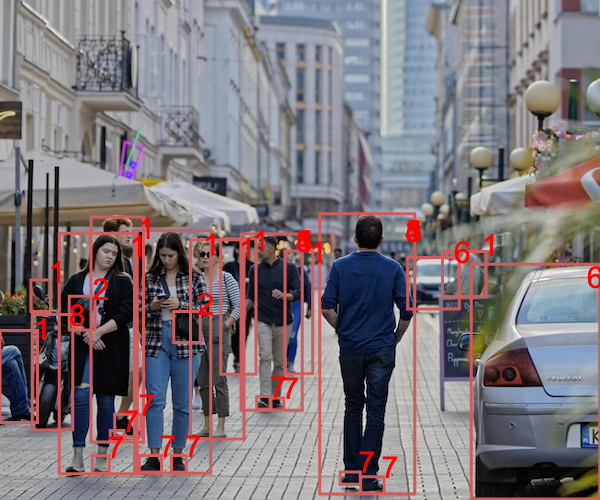

Komp'yuter orqali tasvirni tanish
Rasmni tanlang


Shahar manzarasi

| Yorliq | O'ziga ishonch |
| Piyoda | 100% |
| Shaxs 1 | 100% |
| Sumka | 100% |
| Qo'l sumkasi 2 | 100% |
| Voyaga yetganlar 3 | 99% |
| Erkak 4 | 98% |
| Erkak5 | 99% |
| Insonlar | 99% |
| Yorliq | Ishonch |
| Avtoulov 6 | 90% |
| Transport vositasi | 99% |
| Ayoq qiyim7 | 98% |
| Shahar | 98% |
| Piyoda yurish | 98% |
| Shahar | 97% |
| Mototsikl 8 | 93% |
Qurilish maydoni

| Yorliq | Ishonchlilik darajasi |
| Shaxs 1 | 100% |
| Kaska 2 | 100% |
| Qurilish 3 | 76% |
| Voyaga yetgan inson 4 | 99% |
| Erkak 5 | 99% |
| Yorliq | Ishonchlilik darajasi |
| Yuk mashinasi 6 | 88% |
| Poyabzal 7 | 88% |
| G'ildirak 8 | 83% |
| Xavfsizlik ko'zoynaklari | 94% |
| Ogohlantirish belgisi | 31% |
Meva va sabzavotlar

| Yorliq | Ishonchlilik darajasi |
| Banan 1 | 100% |
| Meva | 100% |
| Apelsin | 85% |
| Nok 3 | 84% |
| Tovuq 4 | 78% |
| Limon | 62% |
| Olma 5 | 50% |
| Yorliq | Ishonchlilik darajasi |
| Savat | 55% |
| Greypfrut | 53% |
| Qalapmir | 53% |
| Laym | 52% |
| Qovoqcha | 52% |
| Zanjabil | 51% |
| Avakado | 51% |